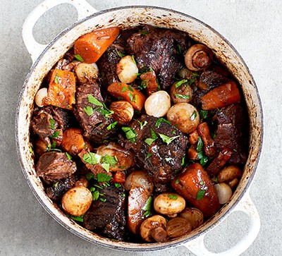
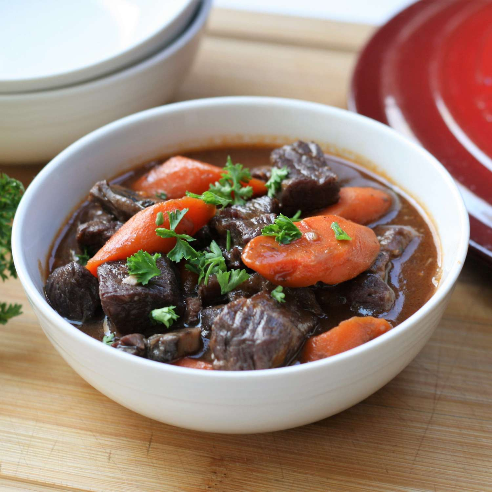
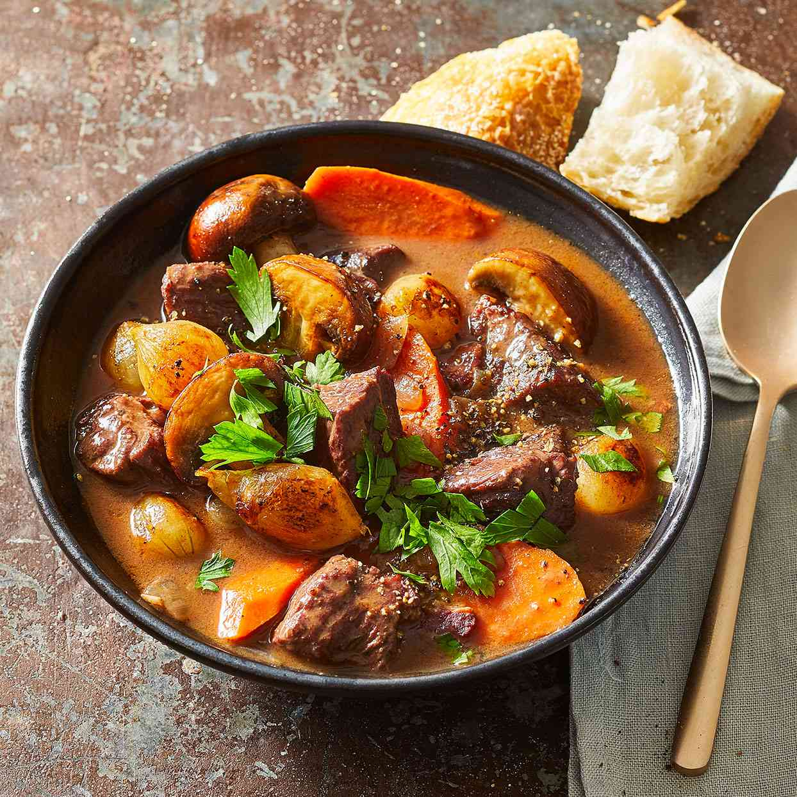

Bourguignon



Quick Details
- Prep Time: 30 mins
- Cook Time: 3 hrs
- Additional Time: 2 days
- Total Time: 2 days 3 hrs 30 mins
- Servings: 8
Beef bourguignon (a.k.a. beef Burgundy) is a French beef stew braised in red wine and beef broth. It also prominently features onions, carrots, and mushrooms.
Ingredients
- Win: or true beef bourguignon, you'll need a red Burgundy wine that is produced in the Burgundy region of eastern France with Pinot Noir grapes. Quality counts – make sure you don't use a bottle you wouldn't want to drink.
- Brandy: Cognac brandy enhances the overall flavor of this complex dish.
- Vegetables: You'll need fresh onions, carrots, and mushrooms. You'll also need a can of tomato paste.
- Olive oil: You'll need olive oil for browning the beef and sauteing the mushrooms.
- Spices and seasonings: This traditional beef bourguignon is seasoned with parsley, a bay leaf, garlic, black peppercorns, garlic, salt, and pepper.
- Beef: his beef bourguignon recipe calls for two pounds of cubed beef chuck roast.
- Bacon: Bacon adds even more meaty flavor to this irresistible beef bourguignon.
- Flour: All-purpose flour helps thicken the bourguignon mixture.
Steps
- Start marinating the meat two days in advance. Chill in the fridge.
- Brown the beef in olive oil until browned on all sides, then transfer to a bowl.
- Sauté the bacon in the same skillet, then move the bacon to the beef bowl.
- Deglaze the skillet with a cup of the marinade.Deglaze the skillet with a cup of the marinade.
- Sauté the onions and carrots. Move the veggies to the bowl with the meat.